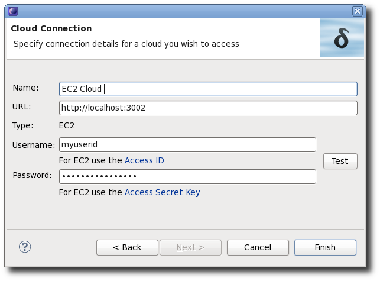
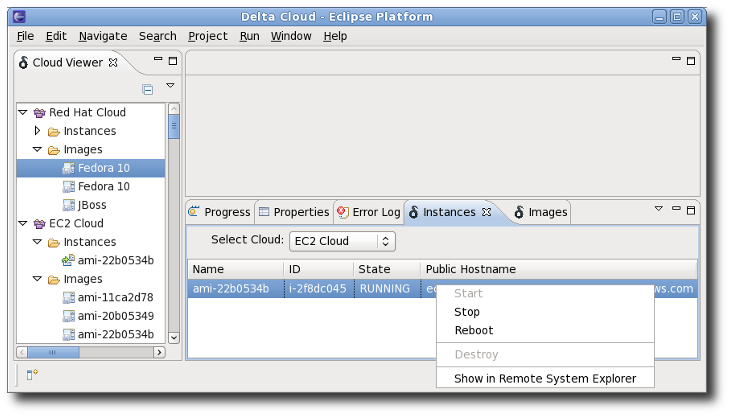
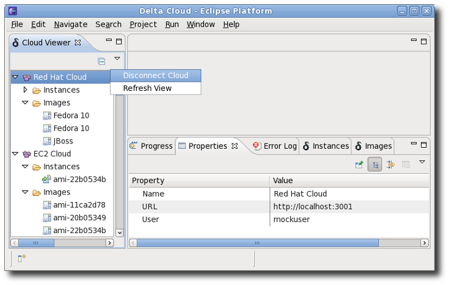
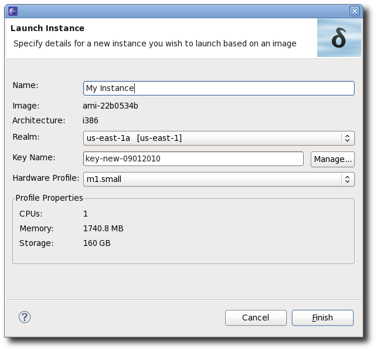
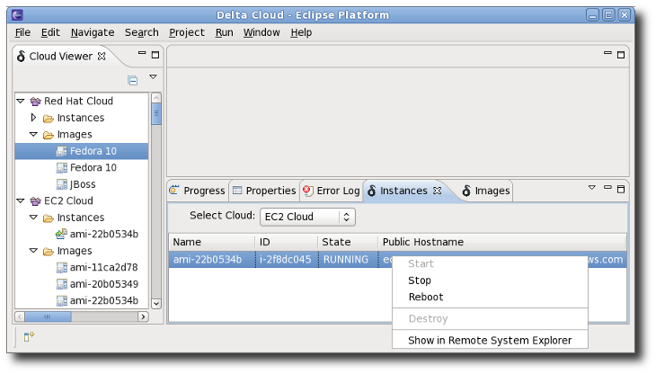
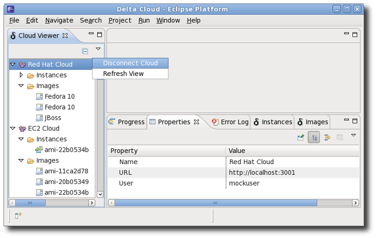
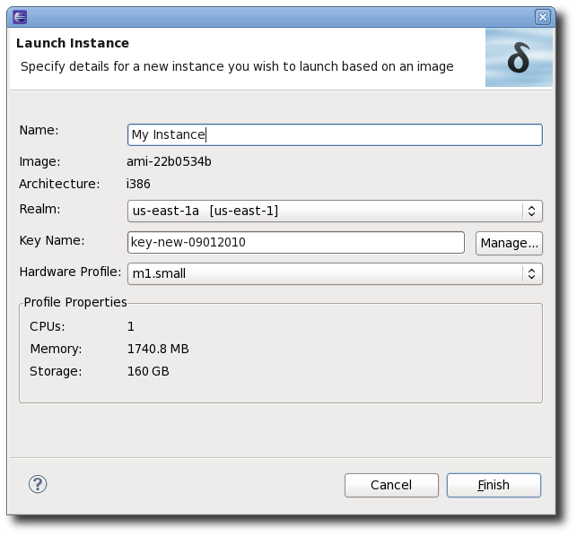

General
Introducing a set of tools to access clouds via the Deltacloud REST API. The Deltacloud Tools provides methods for viewing images, creating instances, performing actions on instances, and connecting via ssh to an instance via Eclipse Remote System Explorer, all using the Deltacloud REST API. Simply connect to a deltacloud server via its URL and supply a userid and password and it will appear in the Cloud Viewer which provides a tree view of the cloud with Images and Instances shown. Clicking on an object in the Cloud View causes details to be shown in the Eclipse Properties Viewer. Note that multiple deltacloud servers can be connected at one time. A separate Images View provides a table view of all images in a specified cloud and allows launching a new instance based on a particular image. As well there is an Instances View which provides a table of all instances in the cloud and allows starting, stopping, and rebooting of selected instances. The Instances View also provides support for connecting via ssh to a running Instance using the Eclipse Remote System Explorer. From the Remote System Explorer perspective one can view and manipulate files on the external instance as if they were local files on the current machine. Accessing the remote Instance requires authentication support such as an EC2 .pem key file. The Deltacloud tools provides a dialog for managing such key files though only one is necessary per user. Any key file must be specified in the Eclipse SSH2 private keys list prior to actually performing the ssh connection. This is easy to do via the Network Preferences dialog found under General Preferences.
 




